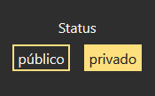

COMPARTIENDO CREAMOS UNA COMUNIDAD
En un futuro muy cercano este apartado servirá como la base de una pequeña comunidad de estudiantes. Aquí se podrán ver todos los paquetes con estatus 'público', se podrán consultar e incluso podrás acceder a las flashcards para poder estudiar las tarjetas Tú mismo podrás aportar tu granito de arena poniendo tus paquetes en público.
Para indicar el status de cada paquete solo tendrás que seleccionar el más quieras en el apartado de estatus del formulario de creación de paquetes. Por defecto se pondrá en 'privado'